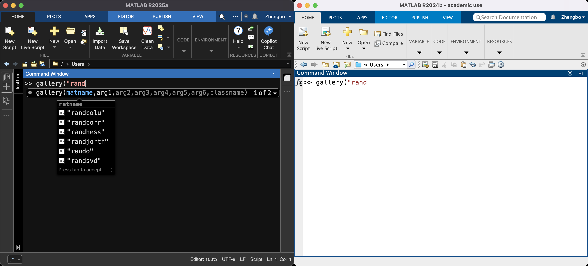
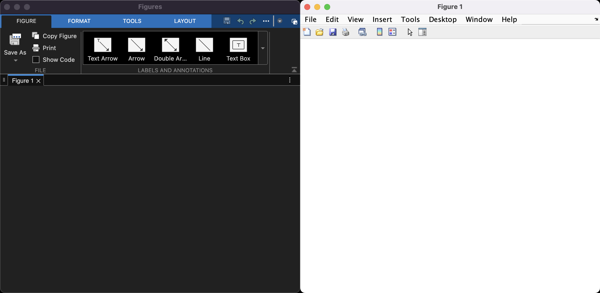

Posted May 29, 2025
MATLAB R2025a was officially released on May 15, 2025, which is delayed by the finalization process.
In this post, I will present several updates which has been made in MATLAB R2025a. For a detailed list of changes, please refer to the official release note website or the official PDF release note.

if-else statement can be inserted using code snippets. However, the user is not able to create their own snippets at this version.Ctrl+L (WIN) or Command+C (MAC). To cut a code line, use Ctrl+X (WIN) or Command+X (MAC).
Since R2025a, archived file formats are treated as folders. Suppose you have an archived zip file called data.zip with
data1.csv and data2.csv inside the zip file. Now, you can import the data from data1.csv via
A = readmatrix("data.zip/data1.csv");
However, there seems to be no auto-completion for data1.csv since it is, in theory, not in your search path. There are other functions, besides readmatrix, that also support this functionality; see here for a detailed list.
Single precision sparse matrices are now supported in all functions that support double precision sparse matrices. A straightforward example is
>> % In MATLAB R2024b
>> A = sparse(randn(10,1)); single(A)
Error using single
Attempt to convert to unimplemented sparse type
>> % In MATLAB R2025a, it will create a single precision sparse matrix
>> A = sparse(randn(10,1)); single(A)
ans =
10×1 sparse single column vector (10 nonzeros)
(1,1) -1.4150e+00
(2,1) -3.3356e-02
(3,1) 2.6112e-01
(4,1) 5.2299e-01
(5,1) 6.7679e-01
(6,1) 6.7440e-01
(7,1) 6.7840e-01
(8,1) -3.1258e-01
(9,1) 3.7924e-01
(10,1) -2.2529e+00
Other possibilities such as creating a 50-by-100 single precision sparse matrix with density 0.1 using sprand(50,100,0.1,"single") are also supported. See here for more usage.
ode supports more objectsode can solve delay differential equations (DDEs) by specifying the Solver property as "dde23", "ddesd", or "ddensd" and specifying the DelayDefinition property as an odeDelay object. If the user only specifies DelayDefinition, then ode automatically selects a solver.ode can solve ordinary differential equations (ODEs) with complex solution values by specifying SeperateComplexParts as "on". This is useful for solving implicit and stiff ODEs where the Jacobian is not specified.One can now work with Copilot inside MATLAB desktop. Now, there is a dedicated sidebar panel for Copilot chat, which can answer questions, help write and explain code, and identify code issues. Thanks to MATLAB's super detailed documentation and the technical articles, Copilot can make use of them and provide reasonable and meaningful skeleton codes. By pressing Shift+Command+P (MAC) or Shift+Ctrl+P (WIN) in the Editor, one can directly ask Copilot to generate some code for you without needing to copy and paste from the Copilot chat.
After experiencing this for several days, I think Copilot integration is particularly useful for starters to become familiar with MATLAB syntax. For experienced users, it brings no significant benefit since MATLAB Copilot is usually not smart enough to generate code with desired functionalities. I wish to see more improvements when MATLAB Copilot can work with AI models that are good at “reasoning”, e.g. ChatGPT 4o-mini.